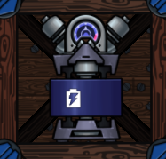

Устройства
Чтобы получить ветряк (или что-то другое) на 100%, вы должны сделать сквозные дыры по бокам базы, лучше защищать эти дыры щитом (он не пропускает пули и пропускает воздух).

Добыча
Реактор
+ 5 металла
+110 энергии
Рудник
+4 металла
-5 энергии
Ветряк (100%)
+45 энергии

Сверх рудник
+6 металла
-10 энергии

Сверхтурбина (100%)
+67.5 энергии

Добыча High Seas
Пропеллер (100%)
+2 металла
-5 энергии

Дымовая труба
+90 энергии

Суперпропеллер
+3 металла
-7 энергии

Дымовая супертруба
+135 энергии

Хранилища
Склад металла
+300 к макс. металла

Батарея
+2000 к макс. энергии
Другое
Ремонтная станция
Чинит и тушит пожары в определённой области.
-10 энергии

Мешки с песком
Поглащяют пули